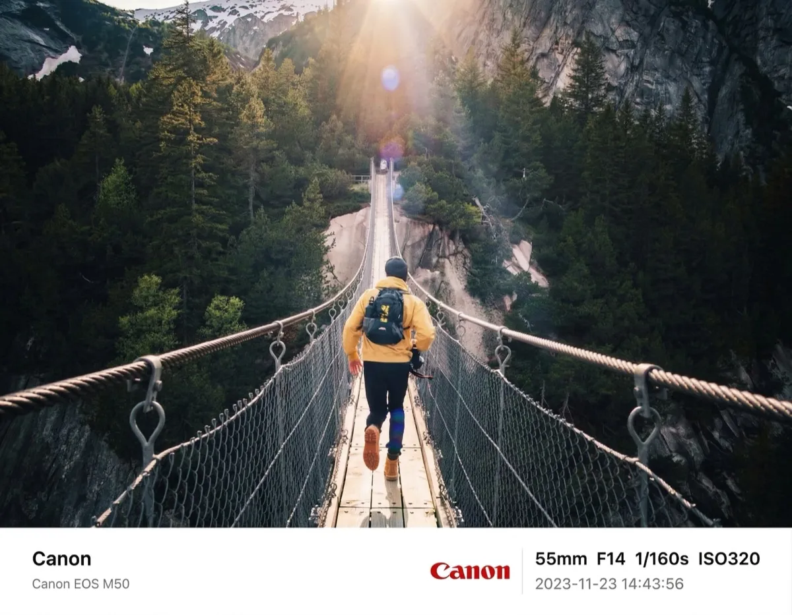
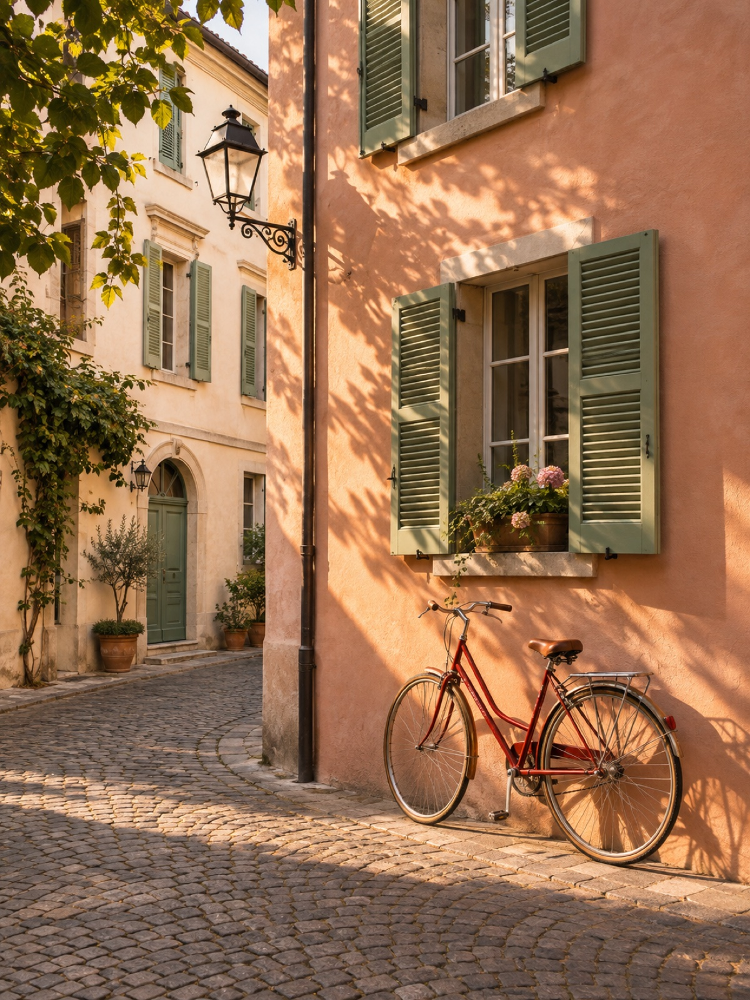
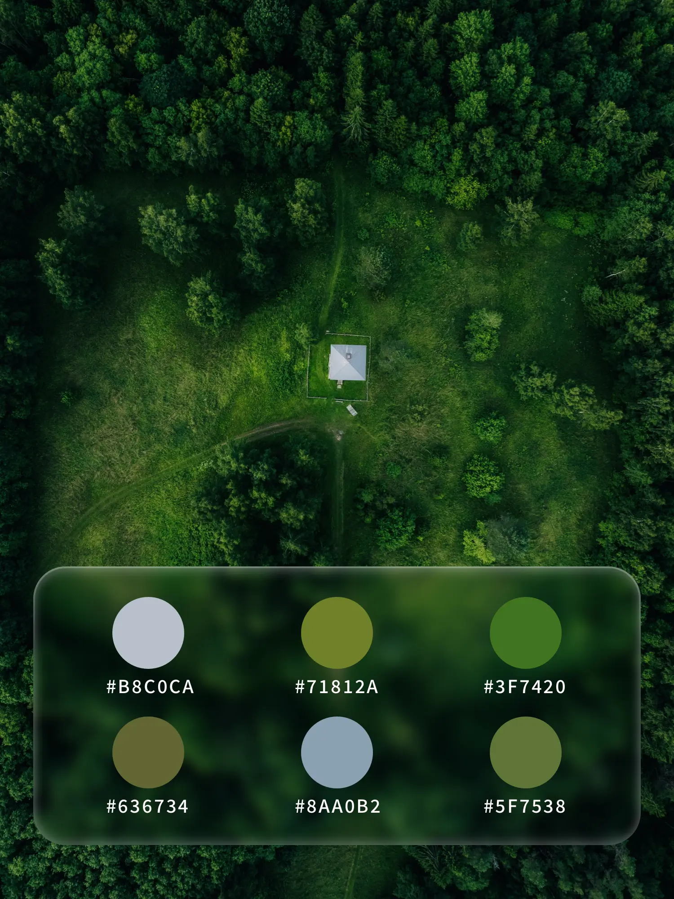

记得画面，也记得怎么拍的。
相机参数、水印与 Logo，让喜欢的器材和这一张作品一起留下。


AI 示例摄影 · 网页边框风格示意，实际效果以 App 为准
一张照片，几种喜欢的样子
简约留白、光影水印、旅行票根、玻璃色卡。
轻点下面的风格，感受边框为画面带来的变化。
01 / 选择风格
02 / 换张照片看看
山海 · 简约留白
这里是网页风格示意。更多版式与参数调整，请在 App 中体验。
每一种风格，都有它的位置
从日常分享，到旅途记忆，再到自己的摄影作品。
找到适合这一张照片的表达。

相机参数、水印与 Logo，让喜欢的器材和这一张作品一起留下。

一座城市、一段日期、一张照片。把途中的记忆整理成可以分享的票根。

玻璃、色卡与光影层次，为照片增加一份细腻的设计感。
本区图片来自 App 自带的模板预览素材
风格之外，照顾每一次创作
根据作品和发布场景调整比例、边距与布局，让横图和竖图都各得其所。
导入自己的 Logo，调整文字、字体与颜色，慢慢形成一眼就能认出的风格。
保存常用的模板设置，下次继续使用。多张照片批量处理，让一组作品保持一致。
给视频添加水印；在支持的 iOS 模板中保留或创作实况照片。各平台能力以 App 为准。
从相册导入照片，单张创作，或让一组照片拥有同样的风格。
边框、水印、票根或创意拼图，先选一个你喜欢的起点。
比例、文字、Logo、颜色和背景细节，一点一点调整到刚刚好。
按需要选择导出画质，保存至相册，再分享到喜欢的平台。
关于光影
光影边框是一款围绕照片与视频边框创作的工具。我们希望把边框、文字、Logo 与模板设计变得简单，让你更轻松地整理和表达自己的摄影作品。
从一张日常记录，到一组旅行照片，再到带有自己签名的作品，好看的表达可以慢慢形成。基础功能免费，部分模板及增值服务通过会员提供。
下一张照片，换一种喜欢的方式
选择你的设备，开始创作。
从 App Store 获取。
需要 iOS 15 或更新版本。
通过官网现有下载渠道获取。
也可在手机应用商店搜索“光影边框”。
打开华为应用市场，
搜索“光影边框”，以商店展示为准。
基础功能免费，部分模板或增值服务需会员。版本、价格、权益与可用功能以各平台 App 内展示为准。
品牌合作
如果你是商家、摄影创作者或器材品牌，
欢迎和光影团队聊聊模板定制、内容共创与摄影合作。
从自己的 Logo 到统一的照片边框，一起讨论专属模板、产品展示与社交分享中的视觉表达。
你有喜欢的拍摄主题、擅长的作品风格，或希望尝试的模板创意？欢迎一起交流和共创。
围绕相机、手机与摄影周边，一起探讨品牌水印、联名模板和适合摄影爱好者的内容。
有一个想法？从一封邮件，或一句微信开始。
联系光影团队风景、城市、人像和日常记录都可以。从简约留白或参数水印开始，再按照片内容选择票根、电影感、拼图等模板。具体支持的文件格式以所用平台为准。
可以。App 支持本地 Logo 与文字编辑；不同模板提供的字体、颜色、边距、参数和位置选项有所不同。你也可以把常用设置保存为配方。
请在“我的”中的导出画质设置里选择适合的质量，并尽量使用清晰原图。原图档仍会经过模板绘制与格式编码，成图尺寸也与照片、模板、格式和设备能力有关。
各平台的模板、实况照片、视频与会员权益可能存在差异。例如部分 iOS 模板支持实况输出。请以设备上的 App 和应用商店说明为准。